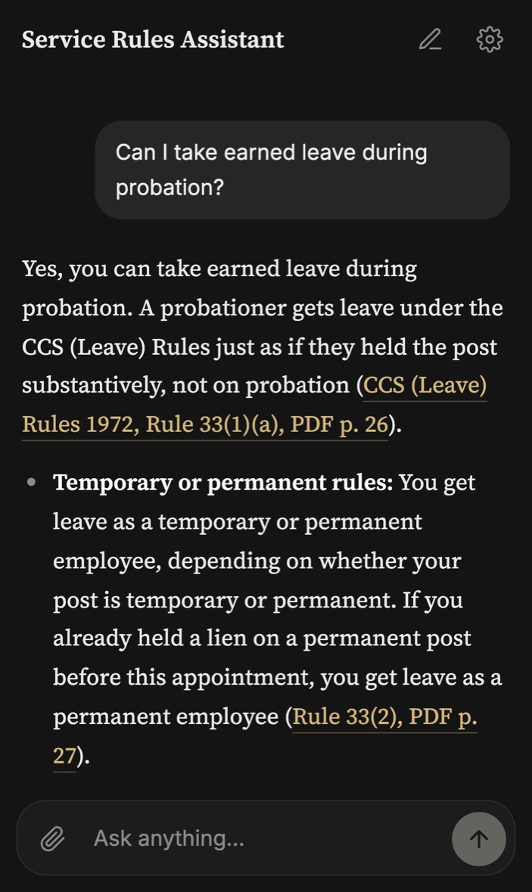
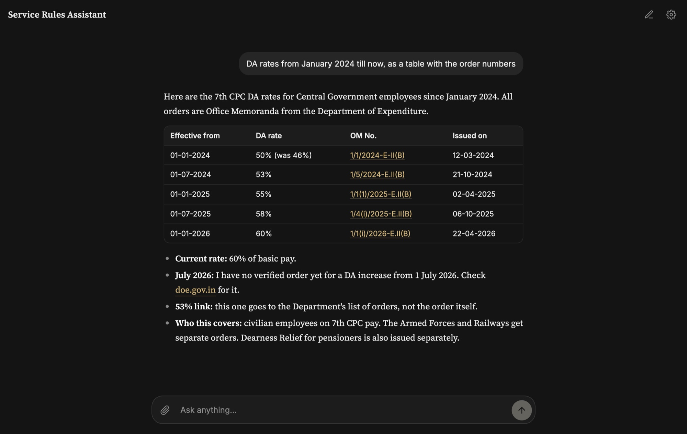
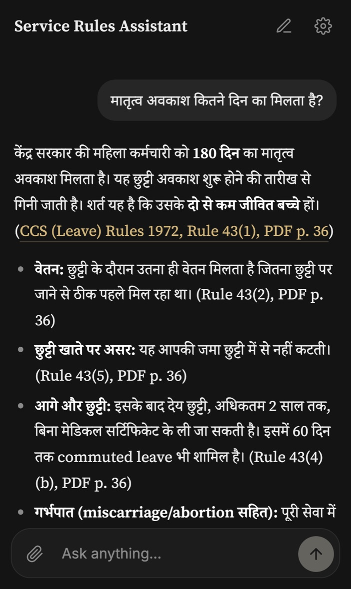

Service rules, answered with the page cited.
Ask about pay, leave, pension or discipline. Answers come from 2,000+ official documents, with the rule and page cited.
- Daily users
- –
- Weekly users
- –
- Monthly users
- –
People who asked a question in the last 24 hours, 7 days and 30 days.

How it works
It looks the rule up before it answers.
It searches rules, office memoranda, manuals and judgments, and reads the provisions in full before it writes a word.

Ask in Your Own Words
Type the question the way you would ask a senior colleague.
Get the Rule and the Page
Each point cites the rule and page, and the link opens the official PDF there.
Know What’s Missing
If the official document isn’t in its library, it says so instead of guessing.
Bring the paper. Ask in your language.
Photograph an order or notice and ask what it means for you. Ask in English, Hindi or Hinglish.
- Photos, PDFs and Word filesIt reads the document, then checks it against the current rules and later orders.
- English, हिन्दी or HinglishIt replies in the language you write in, with the same citations.

What it covers
The questions that come up at work.
Everyday service matters
- Pay, DA and HRA
- Leave of every kind
- LTC, TA and CGHS
- MACP and promotion
- Pension, NPS and UPS
Conduct and discipline
- Conduct rules and intimations
- Suspension
- Charge sheets and inquiries
- Appeals and revision
- Office procedure and GFR
Specific employers and law
- KVS and NVS teachers
- Delhi Police
- Delhi land and DDA
- BNS, BNSS and the NI Act
- Court judgments
Questions people ask first.
Is this an official government service?
No. It’s an independent project and isn’t run by, or affiliated with, the Government of India or any department.
How accurate are the answers?
It answers only from its library of official documents and cites the rule and page for each point, so you can check. It can still make mistakes, so read the cited rule before you act on anything important. It explains rules; it isn’t legal advice.
My department has its own rules. Will it still help?
Often, yes. The library includes KVS and NVS orders and the Delhi Police rules. Where your employer may have adopted the central rules with changes, it says so and tells you where to confirm.
Do I need an account?
You sign in with your Google account. There’s no separate password to create.
What happens to my questions?
Your questions, attached files, your Google account email and the internet address you connect from are recorded to check and improve answers. Leave out names and personal details you don’t need to share.
Who writes the answers?
Anthropic’s Claude Opus 5.5, with Google’s Gemini as a backup. They answer only from the library of official documents, not from memory.